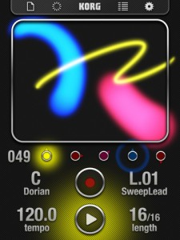

iKaossilator Version 2 is available now!
Audio export, iPad full-screen support, and many more new features● Audio Export records and saves your performance, just as you heard it
● iPad native support allows the iKaossilator to fill the iPad’s large 9.7″ screen
● “SoundCloud” allows users to share and remix loops with other users worldwide
● “AudioCopy” provides an easy way to copy audio data between musical instrument apps
● Flex Play makes it easy to generate fills and breaks☐ Audio Export saves your performance as a file
Now you can record your performance in real time, or export a completed loop as an audio file. By sending your creations to a Mac or PC via iTunes, you can share them with your friends or use them in a full-fledged music production. You can also upload them directly to SoundCloud.☐ iPad native support provides full-screen (9.7″) iKaossilator enjoyment
Now you can perform taking full advantage of the iPad’s large 9.7″ display. Enjoy iKaossilator on your iPhone while riding public transportation, and on your iPad while performing live!☐ “SoundCloud” allows sharing or remix loops with users worldwide
“SoundCloud” is a music distribution and sharing service that’s very popular among musical creators. The loops you create can now be uploaded directly to “SoundCloud” from within the app. If you attach the loop data when doing so, it will be shared to other users’ loop lists. Users worldwide will be exposed to new loops they’ve never heard, and can combine them with their own loops to create remixes. It’s a new way of enjoying music by and unleashing your iKaossilator’s potential throughout the world.☐ “AudioCopy” lets you share audio data between musical instrument apps
Newly added support for “AudioCopy” from Sonoma Wire Works means that you can copy and paste audio data between apps. Audio data you export from iKaossilator can be sent to apps that support AudioPaste.☐ Flex Play makes it easy to generate fills and breaks
Designed for live performance, the Flex Play feature makes it easy to generate fills or breaks. Touch and hold Length or Tempo buttons, and then try stroking the touchpad. Movement in the X-axis will change the Length of all parts, and movement in the Y-axis will change the Tempo, allowing you to add dynamic changes to your song that will further expand your performance possibilities.
New features video
Grab KORG iKaossilator now –